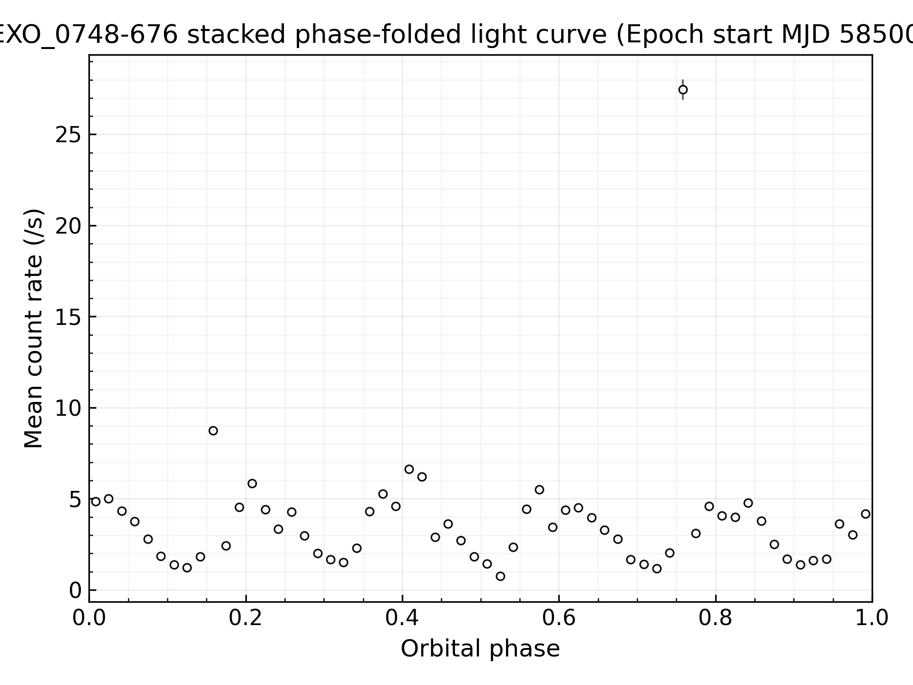
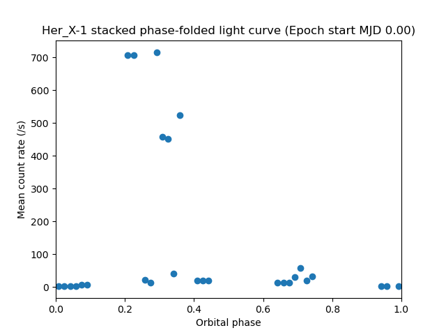
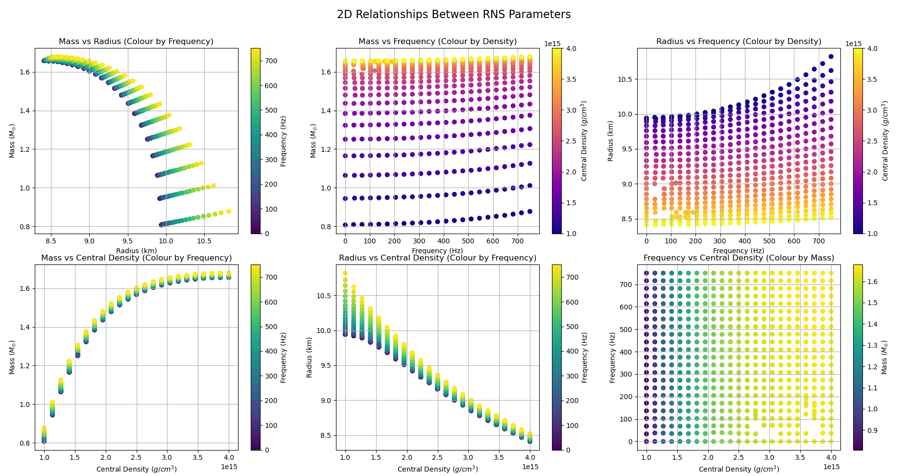
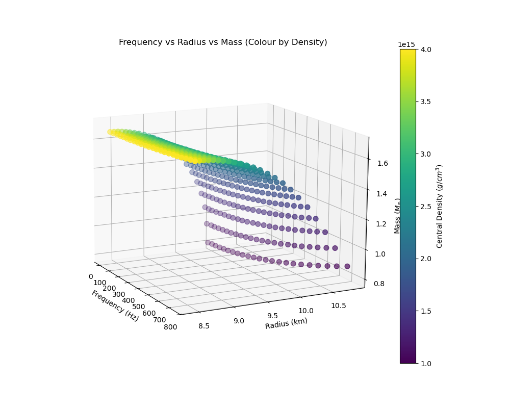

A study of AGN across the Δαox spectrum in the z = 1.8–2.2 range.
Overview
This independent project focuses on analysing different active galactic nuclei (AGN) in the z = 1.8–2.2 range across the Δαox spectrum. It aims to differentiate the correlations between Δαox and other characteristics such as hardness ratios and photon index. The project was designed around one offered by LEAPS Leiden ESA, which I was interviewed for.
A link to the program on GitHub can be found here.
Methods
The parent sample was built by cross-matching the 5XMM-DR15 catalogue with SDSS DR16Q quasars at z = 1.8–2.2, applying cuts on X-ray detection quality, optical brightness, broad absorption and radio loudness. Monochromatic luminosities at 2 keV and 2500 Å were derived from the catalogue fluxes, a linear L2 keV–L2500 relation was fitted to the sample, and each source was assigned a Δαox from its residual, with sources below −0.3 and above +0.3 classed as X-ray weak and strong.
Individual targets were reduced from raw XMM-Newton data with SAS, filtering periods of soft proton flaring and discarding observations with fewer than 35 pn counts. Source and background spectra and light curves were extracted for the pn and MOS cameras, and the spectra were fitted over 0.5–8 keV in PyXSPEC with a Galactic-absorbed power law using the C-statistic. Hardness ratios were calculated with BEHR, fractional variability was measured from the light curves, and the fitted photon indices were validated against the 5XMM-DR15 catalogue.
Results

Summary
An independent XMM-Newton pipeline was developed and validated against published photon indices for quasars at z = 1.8–2.2. Applied to X-ray weak, normal and strong quasars, it finds no link between photon index and Δαox, while recovering the expected correlation between photon index and hardness ratio. However, the small number of well-constrained X-ray weak sources, and the scarcity of X-ray strong sources, limit how firmly these results can be established.
Using HEASoft to Analyse Archived NICER Data of tMSPs
Overview
This independent project focuses on analysing a compact binary system using archival X-ray observations from the NICER mission via the HEASoft database. The objective is to develop and create an automated pipeline which is capable of: downloading, processing, plotting and analysing for the requested object.
A link to the program on GitHub can be found here.
Methods
A Python pipeline was developed to automate NICER data reduction using HEASoft tools through scripted workflows. These workflows are stored in separate .xco and .sh files for user convenience. These files contain variables which the user can alter, such as the energy filter range or which specific module to run. Backgroud noise is estimated and subtracted using the program nibackgen3C50. Furthermore, the program is capable of automatically handling many datasets across different ObsIDs and epochs to produce a variety of plots.
A simple flare-identification model was implemented to flag transient increases in count rate above a baseline threshold. This component is treated as a toy model, serving as a proof of concept for automated variability detection rather than a statistically complete flare-analysis framework. Additionally, the program is capable of running both nicer-l2 with XSELECT and nicer-l3, allowing the user to compare with standard procedure.
Results


Summary
This project demonstrates a complete workflow for NICER X-ray data analysis, from importing archival data to filtering, processing, and analysing it using HEASoft tools in Python. While the current flare statistics and comparison modelling are simplified, the pipeline provides a strong foundation for future studies, incorporating more statistically robust timing and variability analyses, once these improvements are made.
Rotating Neutron Star Modelling
Overview
I began this independent research project following my internship at IFJ PAN in Kraków. It aims to investigate rotating neutron stars using two numerical relativity frameworks: RNS and LORENE, varying properties such as mass, radius, rotation frequency, and central density, and analysing the results.
Methods
A C++ program was created to vary the mass and radius of a neutron star between set limits using a predetermined equation of state (EoS) in both LORENE and RNS, exporting each result to a separate data file. A Python program was then developed to process this modelled data and visualise it using both two-dimensional and three-dimensional plots.
Results

The six-panel figure summarises two-dimensional parameter relationships extracted from the RNS output. Clear correlations appear between mass, radius, and central density, demonstrating the expected relativistic behaviour of compact stars under rapid rotation.

The three-dimensional projection highlights how increasing rotation frequency leads to larger equatorial radii and reduced central densities at fixed mass, consistent with centrifugal flattening.
Summary
This project demonstrates a fully automated workflow for relativistic stellar modelling using RNS and LORENE, combining compiled simulation pipelines in C++ with Python-based post-processing. The resulting visualisations provide an effective framework for exploring how stellar rotation influences equilibrium structure and form a foundation for future work, including equation-of-state variations and gravitational-wave–relevant properties.